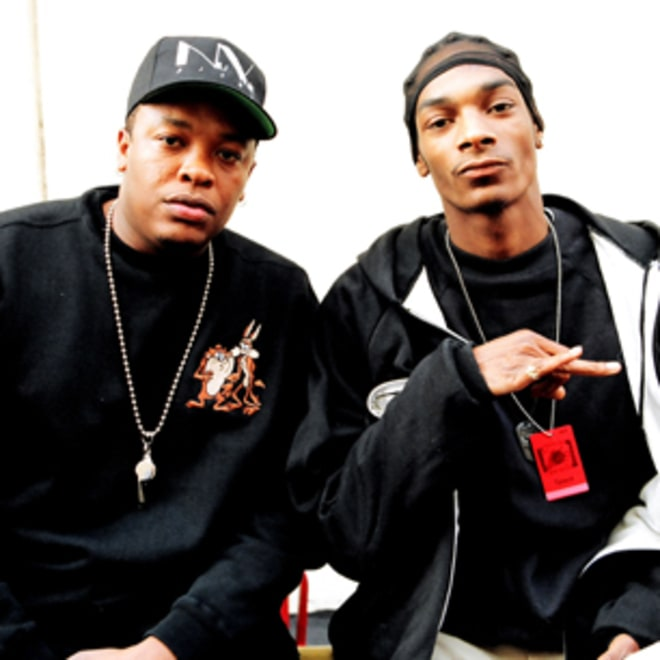
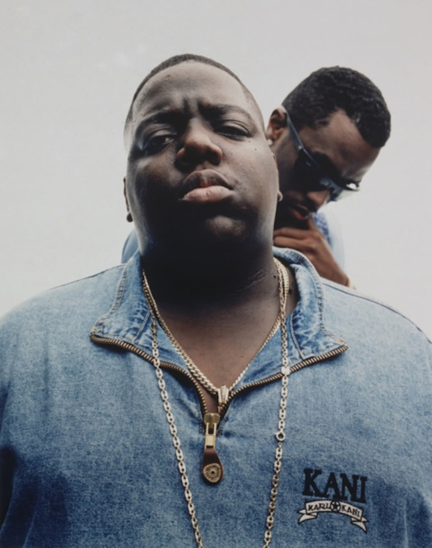
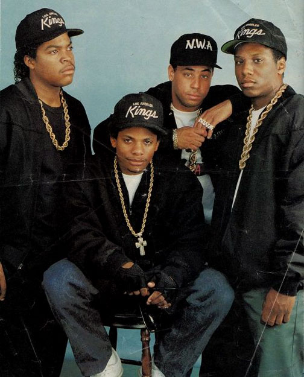
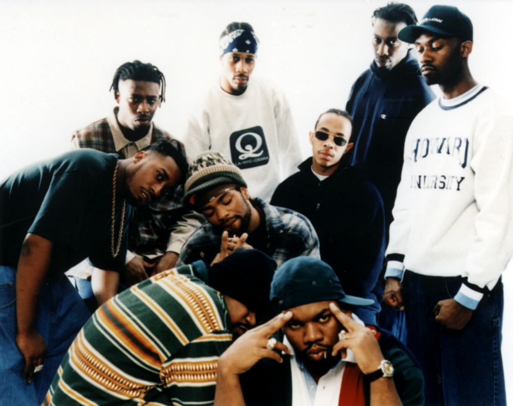
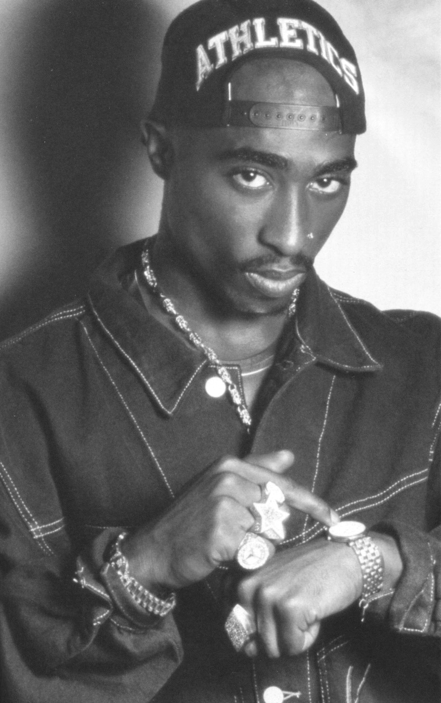

Top 5 Biggest Hits
1. Dr. Dre feat. Snoop Doggy Dogg, 'Nuthin’ But a ‘G’ Thang

The Chronic, 1992
Climbing to Number Two on the singles chart in early 1993, "Nuthin' But a 'G' Thang" made Dr. Dre the undisputed flag bearer of West Coast rap, while also ushering that genre into the pop mainstream. The song's secret weapon was a relatively
unknown pup named Snoop Doggy Dogg, whose verses are packed with effortless quotables. The song also introduced Dre's masterful "G-Funk" style of production, which updated George Clinton's legacy with slow, rubbery funk and layered synth hooks.
"We made records during the crack era, where everything was hyped up, sped up and zoned out," Chuck D explained. "Dre came with ' "G" Thang' and slowed the whole genre down. He took hip-hop from the crack era to the weed era."
2. Notorious B.I.G., 'Juicy'

Ready to Die, 1994
The greatest rapper that ever lived at his absolute peak: hilarious, incisive and insanely inventive as he balances urban realism ("Birthdays were the worst days") and playalistic excess ("Now we sip champagne when we're thirsty"). The
funky first single from the Notorious B.I.G.'s world-smacking 1994 debut, Ready to Die, was a departure from the rugged East Coast rap sound he wanted. But executive producer Sean "Puffy" Combs insisted Big flow over a simple, club-friendly
loop of Mtume's early dance-party jam "Juicy Fruit." (Producer Pete Rock says that Combs got the idea for the track from him.) "I wanted to release music that let people know he was more than just a gangsta rapper," Combs said later. "He
showed his pain, but in the end he wanted to make people feel good."
3. N.W.A, 'Straight Outta Compton'

Straight Outta Compton, 1988
"A murder rap to keep you dancin' with a crime record like Charles Manson," the explosive first track on N.W.A's 1988 debut combined multi-layered, amped-up, Public Enemy-style production with a raw menace like nothing anyone had heard
before. It almost single-handedly shifted hip-hop's focus from New York to South Central Los Angeles, despite MTV's refusal to air the video for "Compton" because of its gun-happy imagery. "Kids were just waiting for it," said Bryan Turner
of Priority Records, which sold 2 million copies of the single. One of those kids was Chris Rock, who brought a copy from L.A. for his dumbfounded East Coast friends to hear: "[N.W.A were] bigger than Madonna or Nirvana," he said. "It was
kind of like the British Invasion for black people."
4. Wu-Tang Clan, 'C.R.E.A.M.'

Enter the Wu-Tang (36 Chambers), 1993
Part of Wu-Tang's greatness was their messy, multitudinous sprawl, but the best song on their debut is ruthlessly efficient: just two breathless verses, plus the catchiest acronym in history, laying out the ground rules of street capitalism.
RZA's sampled pianos rattle like the wind down a project alleyway as Raekwon and Inspectah Deck trade harrowing war stories: "No question I would speed/For cracks and weed/The combination made my eyes bleed."
5. 2Pac, 'Dear Mama'

Me Against the World, 1995
"The emotional, the sad songs, were his personal favorites," said Johnny J, one of the late Tupac Shakur's producers. There was always a plaintive side to 2Pac's thug-life tales, and he foregrounded the pathos on his 1995 ballad tribute
to his mother, Afeni Shakur. The song is the ne plus ultra of hip-hop odes to Mom. Tony Pizarro's beat, with its plush Seventies soul samples, sets a tender mood, and the rhymes strike a similar note: "I appreciate how you raised me/And all
the extra love that you gave me." But "Dear Mama" hits harder for its warts-and-all realism, as 2Pac doesn't shy from describing his own failings, his pain over his absent father and his mother's struggle with drug addiction: "And even as
a crack fiend, Mama/You always was a black queen, Mama."